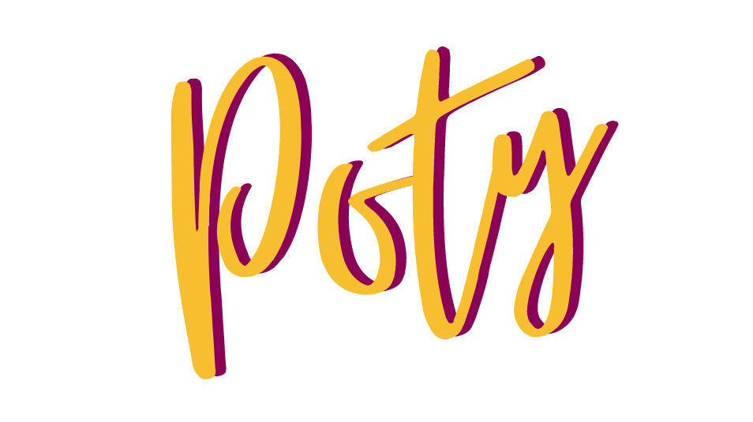

Sobre o Poty
Bem-vindo ao Poll Of The Year, carinhosamente conhecido como Poty! Somos o seu destino digital para todas as votações mais quentes e notícias pulsantes, tanto nacionais quanto internacionais. Imagine um lugar onde você pode expressar sua opinião sobre os assuntos mais diversos, desde as maiores rivalidades esportivas até os lançamentos cinematográficos mais aguardados. No Poty, as enquetes são a essência do nosso universo, oferecendo a todos uma voz para decidir qual é a verdadeira tendência do ano.
Além disso, mergulhamos nas histórias que cativam o mundo, trazendo-lhe uma cobertura envolvente de notícias que abrangem desde os campos esportivos até os holofotes de Hollywood. Junte-se a nós e faça parte do Poll Of The Year, onde a sua opinião molda o cenário das discussões mais relevantes!